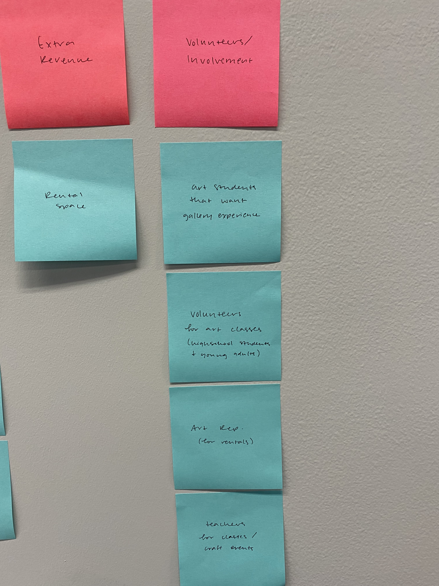
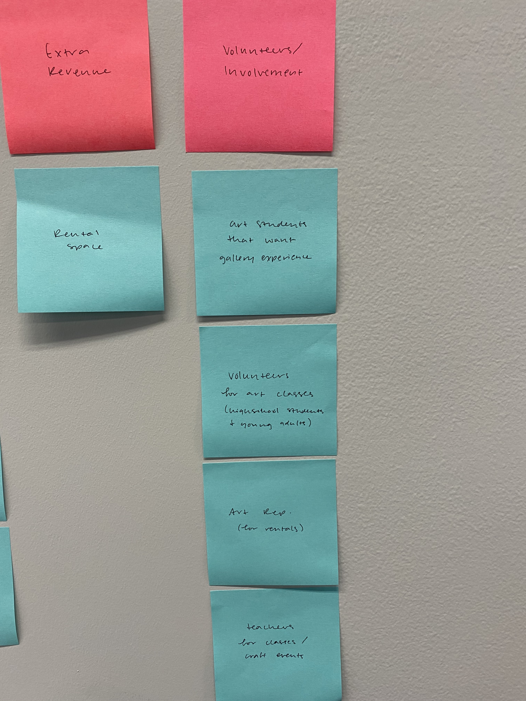

The Goal
What are the goals for this website? How can this website best serve the intended audience?
Overarching Goals
I used sticky notes to define the audience that the Anderson Arts Center intends to reach. I began by researching groups of people in the community to determine specific demographics. After gaining a better understanding of the audience, I was able to cater the website to the needs of the audience.
In order to cater to the needs of the audience, I first explored the needs and goals of the client. From there I was able to identify the goals of the audience when visiting the Anderson Arts Center. Finally, with the priorities of the client and audience in mind, I considered how to combine the two groups and create an effective website.


 

Specific Goals
After gathering the information above pertaining to overarching goals, I focused on crafting specific goals to move this project forward. I broke apart the audience into more specific user groups. Then I focused on details by determining the goals of each user, and the appropriate actions needed to accomplish each goal. By taking these details into consideration, I can create the website to be functional for the user.